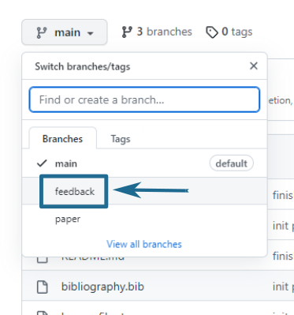
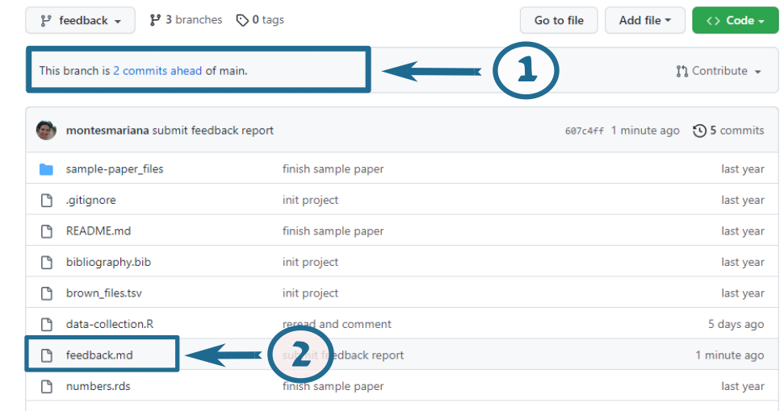
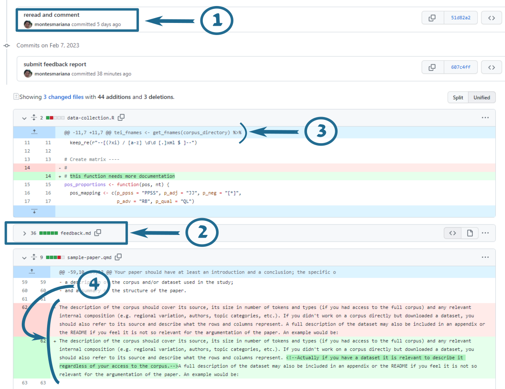
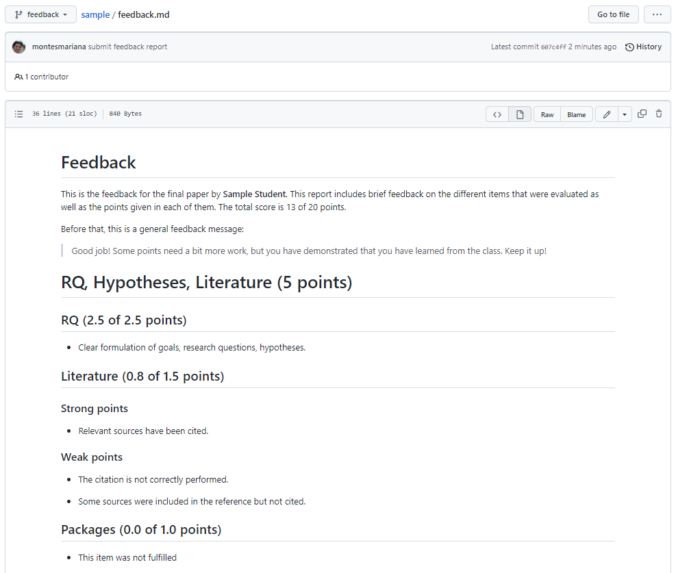

General feedback
The goal of this document is twofold. In section Section 1 I give the instructions to look at your personalized feedback, which can be found in your respective private repositories in https://github.com/mclm2022. If you don’t see or have access to the repository, send me a message and I will fix that. I will not push to any other repositories.
Section 2 gather some points that have been observed in different submissions. This is also important guidance for those who will submit in the resitting period. Not all of these remarks are things I have explicitly mentioned in class. They have affected grades to a different degree — in any case, beyond the rubric I used to be as thorough and fair as possible, this was the fundamental practice:
Exams that failed failed. It was not the accumulation of tiny unsatisfactory things but something important that was wrong and without which there was no passing.
Exams with grades 17 or up were excellent, having none of barely any of the issues described in this file. They were easy to read and evaluate and extremely satisfying.
Examples that pass but with grades below 17 are OK to good and certainly satisfy the minimum expectations of the course. The difference with the top grades can be due to different things: not respecting things that I have asked for (but that were not bad enough for failing) or serious issues with the points described here. Even if I didn’t teach you about them, they did make the evaluation much harder to perform. This is still good work, it just can be much better.
1 How to find your personalized feedback
Your personalized feedback can be found in your private GitHub repository at https://github.com/mclm2022. I have made changes directly to the .qmd file, the script(s) if present and, sometimes, to the README file. In addition, I have compiled a “feedback.md” file that has comments on the different items that were graded.
I have not touched your main/master branch: everything is in a feedback branch, which you can access via the dropdown button at the top left, as shown in Figure 1.

Once on the feedback branch, you can see my contribution. I’ve tried to keep it neat with one commit for all my in-text comments and another for the feedback report, but it may be messier than that. Figure 2 shows what the page looks like when you choose the feedback branch, with two highlighted areas. The number 1 points to the link that shows you the commits Figure 3 and where you can easily see my changes in contrast to the original text. The number 2 points to the “feedback.md” file, which you can read directly on GitHub without downloading it Figure 4.

If you click on the link indicated by the number 1 in Figure 2, you are taken to a page where you can compare the modified files with their original versions, shown in Figure 3. The boxes like the one indicated by the number 1 in this new figure indicate the different commits, in case you want to zoom in on one, i.e. only see the changes between that commit and the previous one. After these commits, you get an overview of each of the files that have been modified (or created!) with one of these commits. Notice that you will see “feedback.md” with its contents fully in green (item 2): this is not the best way to read it, so I recommend you collapse it by clicking on the small triangle next to its name and instead read it by clicking on the link shown by item 2 in Figure 2.
In this view of the files, removed lines are shown in red and added lines are shown in green. If I have made a comment inside a line, you will see the original text in red, the new text in green, and the actual addition highlighted inside the green part (item 3). Sections in blue are collapsed because I have not changed anything (item 4).
I have tried to make all my comments as comments: surrounded by <!-- and --> in markdown files, and preceded by # in R scripts.

In order to read the feedback report, you can click on the name of the file in the page shown in Figure 2, which takes you to the screen shown in Figure 4. As you can see, you can read the contents quite nicely on GitHub directly.
The feedback report starts with a small introduction that summarizes your score and may provide a generalized feedback message (whether that is the case depends greatly on when I graded/wrote the feedback, you may not see such a message). Afterwards there are four sections worth 5 points each, corresponding to the bullet points indicated in the description of the Exam in Toledo. For each of these sections, there are a few subsections that are worth a variable number of points, and for each of them you can see the assigned score. Within the subsections, you may find one bullet point with a general comment or separate sets of bullet points with strong or weak (or, occasionally, “other”) points that were taken into account. Most of these items and more are usually elaborated as comments in the Quarto and R files themselves.

As mentioned in Toledo, if you still have any questions you can contact me on the 14th of February in the afternoon via the Teams link that I provided.
2 Comments and suggestions
In this section I gather some general comments that came up across different papers, and that I thought worth going deeper into. I realize that I was not clear enough about them during the course, so, in the hope to offer you better guidance in this last opportunity, I gathered my thoughts here.
For those submitting in August, I will consider this as read.
2.1 Look at your output
When providing someone with output from Quarto, please take a look at the output file, which is the one they are going to read. Has everything rendered properly? Are the tables and figures meaningful and readable? Are the citations properly rendered? The source file is to see how you do it, but the actual paper is the output file.
2.2 Scripts versus literate programming
Part of what I wanted to teach you was to generate a reproducible project, a bundle of work that you can give to someone else for them to read, replicate, learn from. While this takes practice to figure out, the core principle is to think of your reader and what their experience is reading your content and reproducing your code. In that spirit, the choice of what goes into a Quarto file and what goes into an R script becomes important.
When you run code from a script, you can easily see the output in the console (always in the console) and it’s easy to go line by line (or groups of lines when they have comments or are between { }). The comments in the script help the reader understand what it’s for, especially if it’s a decision that they might not immediately understand, e.g. removing outliers that you captured via interactive exploration, adapting the freqlist() arguments to your corpus format, etc.
Inside this script you may assign variables and/or print them. If you assign them but don’t print them, the user has to type the name of the variable to inspect it. I don’t think that’s a problem, it’s an easy thing to do. After all, you cannot predict when your reader will want to inspect an element. If you are not going to use the object again (e.g. a plot for exploration, a contingency table, a brief accuracy test…) you don’t need to assign the object. If you print something from your script, you’d better only print things that are fast. Printing a data frame with hundreds of rows as is (not as tibble, not with summary()) takes time, takes over the console and is useless to look at.
Writing code into an R Markdown or Quarto document has different goals. When you run code from such a document, you cannot always easily see the output in the console: sometimes it will render inside the chunks. The code in this document is not meant for explorations from the source code, but as interacting with what you say. When you write an R Markdown or Quarto document that contains code, the idea is that the code supports your story and/or that your text explains the code. In the reports used in class, the text of the reports explains the code. And there is no code ran inside that does not directly contribute to what is shown in the report.
The Quarto file is meant to help you reproduce the text output, not run an analysis. Only when the demonstration of the analysis and the text output are the same thing does it makes sense to have a lot of code in your source file. But then, you wouldn’t be hiding it.
Another thing to take into account there is that every time you render your Quarto file you will be recomputing the code that is inside. The actual analysis code takes time, and you don’t need to run it over and over any time you re-render the file! This is why it’s useful to have:
- A script that shows the data cleaning, analysis, etc. as a separate script or multiple separate scripts.
- Files with the output that is relevant for the Quarto file, i.e. plain-text files with tables, .rds files with modelling outputs.
- In the Quarto file, only the code that reads these files and renders the plots, tables, final demonstrative computations…
If you don’t think the computation aspect is too bad, then you can still run the code of an external script by sourcing it.
2.3 Test your code
I mentioned a number of times that, even if I show a long chain of functions that result in my desired R object, as I am creating it, i.e. as I first write the code, I do it step by step to check that I get the output that I want. It is very easy to assume that you are doing things right and that the code fulfills your wishes. It is hard to figure out how to check or test that the code did what you think it’s doing. But it is crucial to learn to do it. This section gathers some tips for that, responding to some cases where the intention of the code and the actual output were clearly different.
2.3.1 If you modified a variable in a dataframe, check that it has the values (or frequencies) that you wanted
Say that you want to create a categorical variable age_cat that takes all values below 20 as “<20” and all other values as “>20”. I’m starting my reasoning wrong because I’m not accounting for values that are equal to 20.
Just to check that my data makes sense, I could run the following:
# A tibble: 2 × 3
age_cat min max
<chr> <int> <int>
1 <20 12 19
2 >20 20 83There you can see that the minimum value of the “>20” category is 20, which was not the plan, and adjust the code accordingly.
The count() function can also help you figure out the frequencies of different categories and which categories you have. Is any category missing? Are those the frequencies you expected?
2.3.2 If you rerun code that you ran before, avoid retyping
Use a variable, functions… but avoid any variability that might mean that the rerun is different from the run.
As an example, we will create a small tibble with sentences that include the numbers of different cities. The goal is to then create a column tour that contains TRUE when the value in phrase contains “tourist” or “tourists” and FALSE otherwise.
set.seed(123)
txt_tibble <- crossing(
city = c("Brussels", "Berlin", "Paris"),
comment = c("I live in %s", "I went to %s and back",
"Never gone to %s", "%s is full of tourists")
) %>%
mutate(phrase = sprintf(comment, city))
slice_sample(txt_tibble, n = 6)# A tibble: 6 × 3
city comment phrase
<chr> <chr> <chr>
1 Berlin I went to %s and back I went to Berlin and back
2 Paris Never gone to %s Never gone to Paris
3 Paris I live in %s I live in Paris
4 Berlin I live in %s I live in Berlin
5 Brussels I live in %s I live in Brussels
6 Paris I went to %s and back I went to Paris and back In the code below, we first try a quick exploration of str_detect() to make sure that we get a meaningful result. Then we implement it in the tibble… but we make a mistake!
# exploration
str_detect(txt_tibble$phrase, 'tourist') [1] TRUE FALSE FALSE FALSE TRUE FALSE FALSE FALSE TRUE FALSE FALSE FALSE# implementation
txt_tibble <- txt_tibble %>% mutate(
tour = str_detect(phrase, 'tourits')
)Would you have noticed the mistake if these had been two out of hundreds of lines of code in a script and I hadn’t told you that it is there? Would you have realized that the tour column does not have your expected value without the check shown below?
2.4 Code repetition
Avoiding unnecessary repetition also applies to code repeated across several scripts, particularly when it is long and convoluted. Copy-pasting a chunk of code is easy, but what if you realize later that there was a mistake, or you want to make an adjustment? You have to make sure to fix the copy (or copies) in exactly the same way. Maybe once or twice that’s doable, but it’s not sustainable.
Instead, it’s safer to either get common code in another script that is sourced by the files that use it (check source()) or to store the output in the first run and then open it the following times you call it.
2.4.1 Saving output
It is always preferable to save output in an interoperable format (that different softwares can parse), such as plain-text files (.txt, .csv, .tsv…). Think: if I have this output, who can I give it to, how can this be opened later?
I do love RDS (and that is why I recommended it), but it’s best to leave it for R objects that you cannot save in another way (e.g. raw model outputs) or that you definitely only will read with R (e.g. a list of values for your Quarto file). Dataframes should be stored as plain text file so you can also explore them in a text editor, with Python, in Excel, whatever.
Saving as .Rdata with save(), which can be loaded with load(), forces the name of the variables, which removes the option from the user. If I want to open your data in my own script, and I already have a variable with that name, it will mess up my environment. With RDS and other formats, the user knows explicitly the name of the variable that the data is stored with, and also has the opportunity to explore it without saving it to a variable.
All mclm objects have a write_ function paired with a read_ function that is tailored to the object but also saves them in an interoperable format. The same way you can save association scores output with write_assoc() so that you read them with read_assoc() and concordances with write_conc(), you can save frequency lists with write_freqlist(), filenames with write_fnames(), types with write_types()… The output is a plain text file that you can open with your text editor and read with whatever. The reason that there are specific functions is that they save (and then read) the data in a way that keeps the integrity and properties of the objects, whereas write_tsv() or other functions would lose those properties. You can learn about these and other functions in the “Value” section of the documentation of freqlist(), fnames(), types()…
2.5 Actual techniques
A main point that I wish I had managed to get across better is: these are exploratory techniques. This means that they are not, at least in most cases, enough by themselves, but they are supposed to orient you in the direction of the interesting stuff. Your corpus is like a huge new uncharted land with mountains and valleys and meadows and swamps, and you have a thing you want to find (a research question). Exploring the land on foot is one possibility: you read your corpus. But the technique you choose is a way to generate one or more big neon arrows pointing to the region that can help you find what you seek.
Once you get a result from your analysis (a list of keywords or collocations, a biplot with correspondences, coefficients) you have your big arrow… but the land is right there. You can go to where the arrow points to and see what it is that it is trying to show. The association measures or the biplots show attraction? Ok, what are the actual frequencies we are talking about, what is an example of that context? You have the raw frequencies, you have a function to generate concordances, use them.
The techniques don’t give you an answer to your question as much as the direction of where you can find it. It tells you where the patterns are so you can go and explore them, describe them, understand them.
2.5.1 Explain the technique
Part of what I need you to show me is that you understand the technique you are using. You don’t even need to show you learned everything that I taught in class, just what is relevant to the technique you chose. What does logistic regression / correspondence analysis / keyword analysis … do? Imagine you reader has never heard of it: what is the minimum that you should say so they understand how that technique addresses your question? What are the caveats/warnings of that technique, type of association measure, approach…?
2.5.2 Frequency lists
Please tailor the arguments of freqlist() to your corpus! If you have normal running text, don’t use space as a delimiter! The default values of freqlist() are meant for normal running text (like the one you are reading right now) in UTF-8 encoding (which is the preferred one). The space as a delimiter is used in the Brown corpus because it has word/pos pairs separated by spaces: the punctuation is separated from the words by spaces. In normal, not-annotated text, that is not the case. The code below illustrates this: the output to the left shows the tokens when using space as a delimiter, while the output to the right shows the tokens based on the default tokenizer.
library(mclm)
my_example_text <- "
This is some text that has not been annotated.
It's normal (English) running text!
Most of the web-scraped corpora, or in any case not-annotated corpora,
look like this.
"
with_splitter <- freqlist(my_example_text, re_token_splitter = "\\s+", as_text = TRUE)
default <- freqlist(my_example_text, as_text = TRUE)
head(with_splitter)
head(default)Frequency list (types in list: 6, tokens in list: 7)
<total number of tokens: 28>
rank orig_rank type abs_freq nrm_freq
---- --------- ---------- -------- --------
1 1 corpora, 2 714.286
2 2 (english) 1 357.143
3 3 annotated. 1 357.143
4 4 any 1 357.143
5 5 been 1 357.143
6 6 case 1 357.143Frequency list (types in list: 6, tokens in list: 9)
<total number of tokens: 28>
rank orig_rank type abs_freq nrm_freq
---- --------- --------- -------- --------
1 1 corpora 2 714.286
2 2 text 2 714.286
3 3 this 2 714.286
4 4 annotated 1 357.143
5 5 any 1 357.143
6 6 been 1 357.143If, in addition, you use re_drop_token to remove tokens that match certain punctuation marks, you are removing the words that ended up attached to the punctuation marks.
Frequency list (types in list: 6, tokens in list: 7)
<total number of tokens: 28>
rank orig_rank type abs_freq nrm_freq
---- --------- ---------- -------- --------
1 1 corpora, 2 714.286
2 2 (english) 1 357.143
3 3 annotated. 1 357.143
4 10 it's 1 357.143
5 22 text! 1 357.143
6 26 this. 1 357.143Frequency list (types in list: 1, tokens in list: 1)
<total number of tokens: 28>
rank orig_rank type abs_freq nrm_freq
---- --------- ---- -------- --------
1 12 it's 1 357.1432.5.3 Logistic regression analysis
Random effects don’t make sense if you have only one observation per individual. If very few individuals have multiple observations, you might consider choosing one from each.
As a rule of thumb, check the frequency of your least frequent response value and divide it by 20. That is the maximum number of predictors you can have.
The C-value is the most important measure to show the relevance and accuracy of your result. Just accuracy is not enough, especially if you don’t compare it to the baseline accuracy of always guessing the most frequent result. AIC is necessary if you compare models to each other. \(R^2\) is an option to show quality, but not better than the C-value (or area under the ROC curve, which is the same).
2.5.4 Correspondence analysis
The scree plot is a good addition: not necessary (since you will plot only two dimensions anyways) but nice, and if you mention it: plot it.
When you talk about a statistical measure you need a measure of quality. ca() provides that; use it. At least, beware of data points with very low quality and mention them.
The plot is exploratory. The idea is that you are interested in the relationship between the rows, between the columns, and between the rows and columns of your contingency matrix (this should be mentioned in the description). It summarizes the variation so that you have an idea of where the variation is, so you can go inspect it. This could be by reading the outlier file, by checking concordances of the weird-behaving words… but crucially, remember that you still have the contingency table with the actual frequencies. The plot can tell you “this word seems very attracted to this file”: it’s the contingency table that will clarify: because it occurs only in that file… once. Don’t stay with only the plot when the actual data is so easy to check.
2.6 Packages
It’s good practice to list the packages needed (with the library() calls) at the beginning of your script. Then the reader knows what is necessary to install and doesn’t suddenly run into incompatibilities or need to update after having run some code. (I don’t do it here because the goal of this document is entirely different.)
But avoid listing packages that are not used. Every library() call uses memory and computation, and if the reader does not have that package they may have to install it. It also suggests that you don’t know what the libraries are for.
2.7 Writing
As a tip for any structured text with sections, every time you have an internal division, explain it. Instead of going straight for your sections or your subsections, write a short text that explains what the different sections or subsections are and, if possible, how they link to each other (use cross-references!). You may notice that I am not doing that within Section 2, and that makes it harder for you to keep up with the structure of the text and the relationship between the ideas.
I am not adding a conclusion, either. A proper conclusion would recap the structure of the full text and how the sections link with each other. When you anticipate the sections in the introduction, the reader does not know the content: when you repeat them in the conclusion, they can finally bring all the ideas together into a meaningful whole.